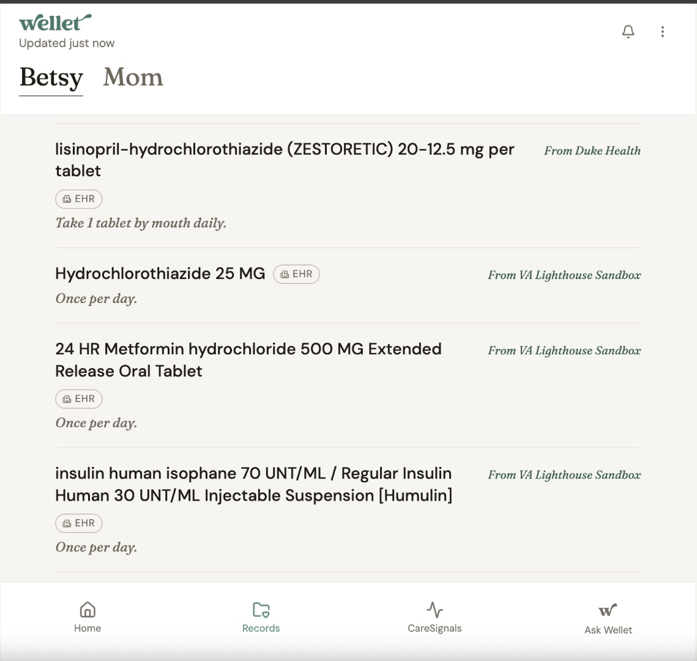

The receipts behind Wellet's Billion Dollar Build application.
Every number below is a live count from Wellet's production database. No marketing math, no rounding up. Refresh the page to see it move.
The differentiator
Three live FHIR vendors. Not Epic-only.
Most consumer caregiver apps speak one vendor's API. Wellet speaks three today, with the architecture proven across two different FHIR stacks. Add the next hospital in a week, not a quarter.
Architecture receipts:
Two different OAuth flavors (Epic SMART-on-FHIR Confidential, VA Lighthouse). One unified data model. ehr_system column splits Duke/UNC/VA at the row level. Patient never sees the seam.
The screenshot that took 64 days
One medication list. Two hospitals. Same loved one.

Most caregiver apps stop at one hospital. Wellet doesn't. The medications screen above is rendering rows from Duke's Epic FHIR R4 endpoint and UNC's Epic FHIR R4 endpoint simultaneously, with VA Lighthouse data backfilled the same day.
Every row carries its source label (From Duke Health, From UNC Health Care) so the caregiver always knows which chart said what. No silent merging. No source confusion.
This is what "multi-hospital" actually means: data flowing, attributed, deduped, and presented as one story.
Build velocity
What 49 days of solo + Computer looks like.
- 669 commits since April 14, 2026 — 350 in the last 30 days alone
- 66 production Supabase edge functions
- 8 always-on Computer crons running ops, evidence, triage, scope-watching
- 129 database migrations
- 30 hospital systems activated on Epic's Confidential client (of 486 requested)
- Three FHIR vendors live (Epic-Duke, Epic-UNC, VA Lighthouse) — two different OAuth stacks
- Stripe LIVE · Caregiver app free forever · Wellet Pro credit packs ($10/$25/$50) for self-trackers
- iOS Wellet Connect on TestFlight, App Store submission in review
- HIPAA in code:
assertVendorAllowedForPhi()guardrail enforces Azure OpenAI BAA for PHI, Sonar for non-PHI
The ops layer
The company runs itself overnight.
Eight silent-by-default Computer crons watching production. They write to wellet_ops_events and notify only on real signal. A solo founder operating like a team of five.
— ops events written by these crons since launch. Every one is a row in Postgres. None of them woke me up unless they needed to.
3 most impactful Computer prompts
Three sessions that compounded.
From the BDB application form. Each one turned a weekend of solo-founder risk into an afternoon.
Duke Confidential client OAuth migration
Epic re-registration, JWKS key generation, OAuth architecture rollover from public to confidential client. Zero downtime on Mom's live chart.
"Can Computer triage my Gmail?"
One question became 8 silent-by-default crons: inbox triage, tester-signal → Linear, BDB evidence, Duke scope watcher, nightly wishes extraction, service health, Monday brief, background EHR sync.
Practitioner enrichment cascade
Duke strips Practitioner.telecom on the wire. Computer designed a three-tier cascade: EHR → dukehealth.org directory → NPPES fallback. Caregivers see real names, departments, phones.
Every situation Wellet addresses
The 28-item use case directory.
Caregiver pay (4 federal programs Wellet surfaces), chart and records (multi-EHR, wearables, documents, VA), CareSignals patterns, before-you-call answers, family invites, wishes, and what's coming next — clinical trials, genomic, and the federal Caregiver AI Prize Challenge. Every situation gets one plain-language tap-to-expand entry.
Top of the directory: caregiver-pay program matching — the layer turning Wellet from viewer into actor. Wellet surfaces VA PCAFC, state Medicaid Structured Family Caregiving, the CMS GUIDE Model for dementia, and Medicare Caregiver Training Services billing codes when a loved one's chart shows a qualifying diagnosis or coverage.
Live traction
The numbers that matter.
- — real signups (excludes founder + test accounts)
- — live EHR connections syncing today
- — real hospital-connect request from a caregiver (Kelly Washburn, 83-year-old mom, multi-hospital bug fixed in 12 hours)
- — bug reports last 7 days — build is holding
- 53M US family caregivers (AARP) · 12M caring for an aging loved one · 9M veterans
- Stripe LIVE · Caregiver app free forever (no card) · Wellet Pro credit packs ($10/$25/$50) for self-trackers
- LinkedIn launch May 22 · Rich DeAugustinis (TMA, 10K+ members) engaged within hours
- $0 outside capital · solo-funded · Wellet, LLC (path to Delaware C-Corp on selection)
Counts auto-refresh from Supabase every page load. Last updated: just now.
Why a billion-dollar opportunity
Three things just became true at once.
- CMS interop rules mandate FHIR R4 at every Epic and Cerner hospital — Wellet is built on this rail
- Apple Health is the consumer aggregation layer 1B+ devices already trust — Wellet syncs to it natively
- LLMs under BAA can reason over a clinical record with citations — Azure OpenAI BAA in production today
- Moat: a Living Timeline fusing 9 data sources, a care-circle network effect (every loved one pulls in 3-5 family members), HIPAA in code, ops at <$50K/yr
- Wedge → expansion: adult-child caregivers ($80B by 2030) → every adult owning their own chart → B2B2C with health systems & employers